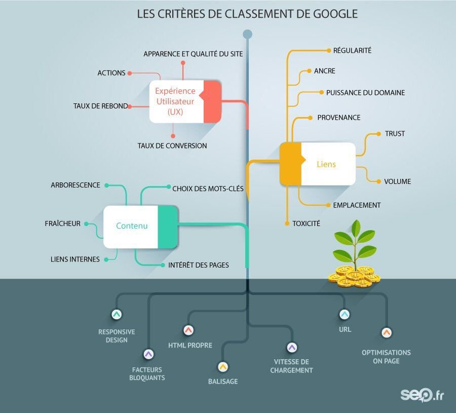
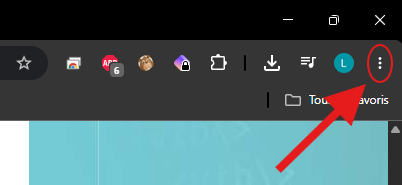
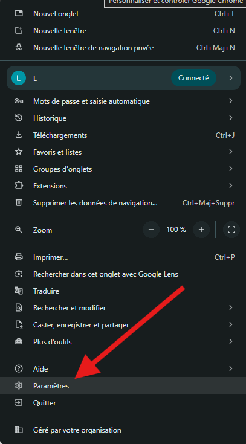
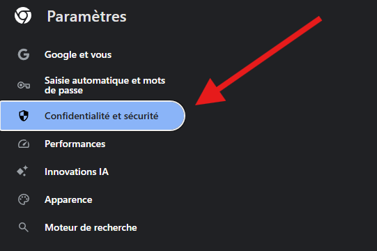
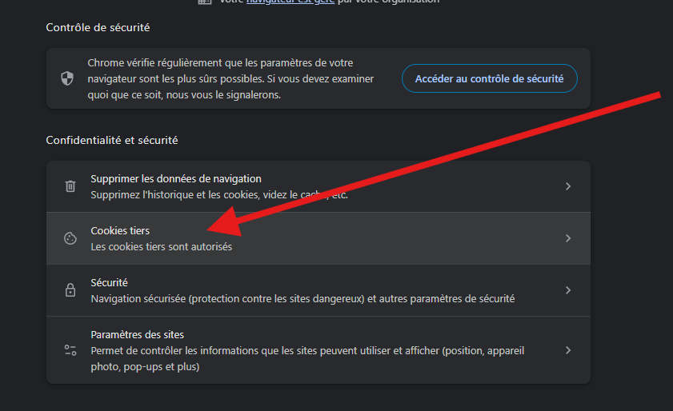
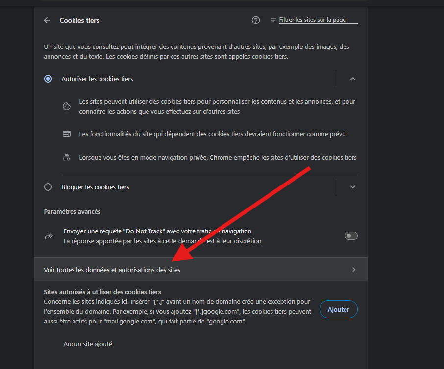
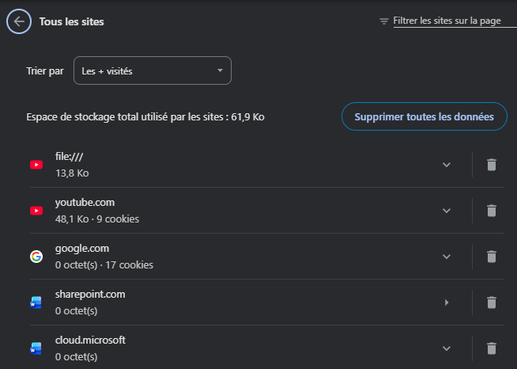

Doc. 1 Hameçonnage (phishing)
Lire l’essentiel de l’article Wikipédia en cliquant ici.
Chapitre 2 – Le Web
Un moteur de recherche est une application web qui permet d’accéder à des ressources (pages web, images, fichiers…). La recherche se fait généralement à l’aide de mots-clés.
Les moteurs de recherche explorent le web à l’aide de programmes appelés robots, qui ont pour rôle d’indexer les pages web. À partir de cette récolte d’informations, le moteur de recherche classe ces pages dans un certain ordre à l’aide d’algorithmes.
Suivant les mots-clés tapés, le moteur de recherche affiche les liens des pages dans l’ordre de celles qui lui semblent les plus pertinentes au vu de la recherche effectuée.
Conclure quant à l’ordre des résultats affichés.
Regarder la vidéo sur la notion de PageRank (vous pouvez activer les sous-titres) :
Le SEO, de l’anglais Search Engine Optimization, désigne les méthodes d’optimisation pour les moteurs de recherche.
Il existe bien sûr d’autres algorithmes que le « PageRank » pour classer des pages :

Rappeler en quelques lignes le fonctionnement d’un moteur de recherche.
Regarder la vidéo ci-dessous et rappeler en quelques lignes le rôle d’un cookie.
En premier lieu, ouvrir Google Chrome et naviguer sur quelques sites web, notamment des sites journalistiques ou des boutiques en ligne. Autoriser les cookies sur ces sites. Puis, pour les observer :






Vous pouvez, à partir de cette page, configurer différents paramètres de sécurité, supprimer vos cookies, votre historique, etc.
Regarder la vidéo, puis répondre aux questions.
Donner trois exemples d’utilisations de cookies.
Qu’est-ce qu’un cookie tiers ?
Quels sont les aspects négatifs de l’utilisation de cookies ?
Lire l’essentiel de l’article Wikipédia en cliquant ici.
Lire l’article de la CNIL en cliquant ici.
Qu’est-ce que l’hameçonnage ? Quels sont les éléments qui nous permettent de soupçonner une tentative malveillante de « piratage » ?
Quelles sont les différences entre la navigation « classique » et la navigation privée ?